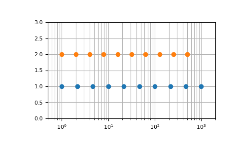

numpy.geomspace¶
-
numpy.geomspace(start, stop, num=50, endpoint=True, dtype=None)[source]¶ Return numbers spaced evenly on a log scale (a geometric progression).
This is similar to
logspace, but with endpoints specified directly. Each output sample is a constant multiple of the previous.Parameters: start : scalar
The starting value of the sequence.
stop : scalar
The final value of the sequence, unless endpoint is False. In that case,
num + 1values are spaced over the interval in log-space, of which all but the last (a sequence of length num) are returned.num : integer, optional
Number of samples to generate. Default is 50.
endpoint : boolean, optional
If true, stop is the last sample. Otherwise, it is not included. Default is True.
dtype : dtype
The type of the output array. If
dtypeis not given, infer the data type from the other input arguments.Returns: samples : ndarray
num samples, equally spaced on a log scale.
See also
Notes
If the inputs or dtype are complex, the output will follow a logarithmic spiral in the complex plane. (There are an infinite number of spirals passing through two points; the output will follow the shortest such path.)
Examples
>>> np.geomspace(1, 1000, num=4) array([ 1., 10., 100., 1000.]) >>> np.geomspace(1, 1000, num=3, endpoint=False) array([ 1., 10., 100.]) >>> np.geomspace(1, 1000, num=4, endpoint=False) array([ 1. , 5.62341325, 31.6227766 , 177.827941 ]) >>> np.geomspace(1, 256, num=9) array([ 1., 2., 4., 8., 16., 32., 64., 128., 256.])
Note that the above may not produce exact integers:
>>> np.geomspace(1, 256, num=9, dtype=int) array([ 1, 2, 4, 7, 16, 32, 63, 127, 256]) >>> np.around(np.geomspace(1, 256, num=9)).astype(int) array([ 1, 2, 4, 8, 16, 32, 64, 128, 256])
Negative, decreasing, and complex inputs are allowed:
>>> np.geomspace(1000, 1, num=4) array([ 1000., 100., 10., 1.]) >>> np.geomspace(-1000, -1, num=4) array([-1000., -100., -10., -1.]) >>> np.geomspace(1j, 1000j, num=4) # Straight line array([ 0. +1.j, 0. +10.j, 0. +100.j, 0.+1000.j]) >>> np.geomspace(-1+0j, 1+0j, num=5) # Circle array([-1.00000000+0.j , -0.70710678+0.70710678j, 0.00000000+1.j , 0.70710678+0.70710678j, 1.00000000+0.j ])
Graphical illustration of
endpointparameter:>>> import matplotlib.pyplot as plt >>> N = 10 >>> y = np.zeros(N) >>> plt.semilogx(np.geomspace(1, 1000, N, endpoint=True), y + 1, 'o') >>> plt.semilogx(np.geomspace(1, 1000, N, endpoint=False), y + 2, 'o') >>> plt.axis([0.5, 2000, 0, 3]) >>> plt.grid(True, color='0.7', linestyle='-', which='both', axis='both') >>> plt.show()
